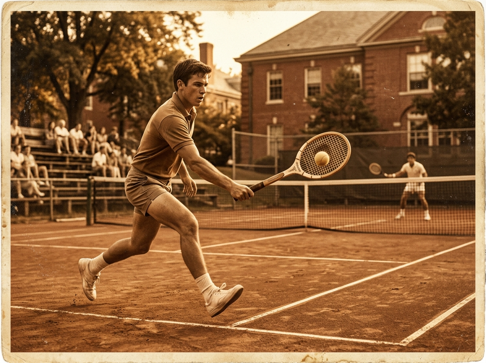
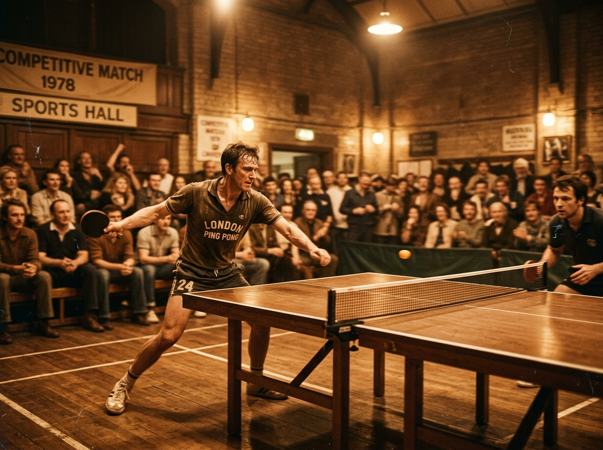
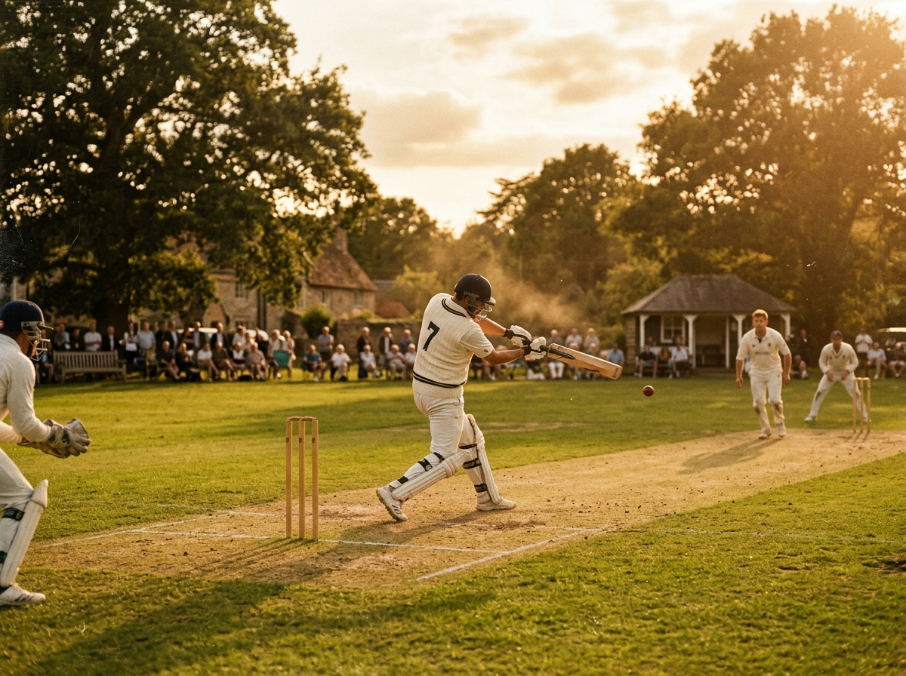

Beyond the Code
Life is not only spent at a desk. Here is how I recharge — through sport, motion, and the quiet discipline of philosophical reading.

Tennis demands explosive footwork, strategic thinking, and mental fortitude under pressure — skills that map neatly onto software engineering challenges.

Fast reflexes, pinpoint spin control, and reading your opponent — table tennis is chess at 100 km/h. A brilliant stress-reliever between long coding sessions.

Cricket is patience, strategy, and the thrill of a well-timed drive. Playing with friends and colleagues keeps me grounded and team-oriented.
Alongside sports, I am drawn to philosophical thought — particularly
Stoicism, existentialism, and the philosophy of mind. Reading gives me
a framework for resilience and clarity that complements both competitive
sport and software problem-solving.
Favourites include Marcus Aurelius, Albert Camus, and Nassim Taleb.
The common thread? Thinking carefully about how to act well under
uncertainty.
"You have power over your mind — not outside events.
Realise this, and you will find strength."
"The impediment to action advances action.
What stands in the way becomes the way."